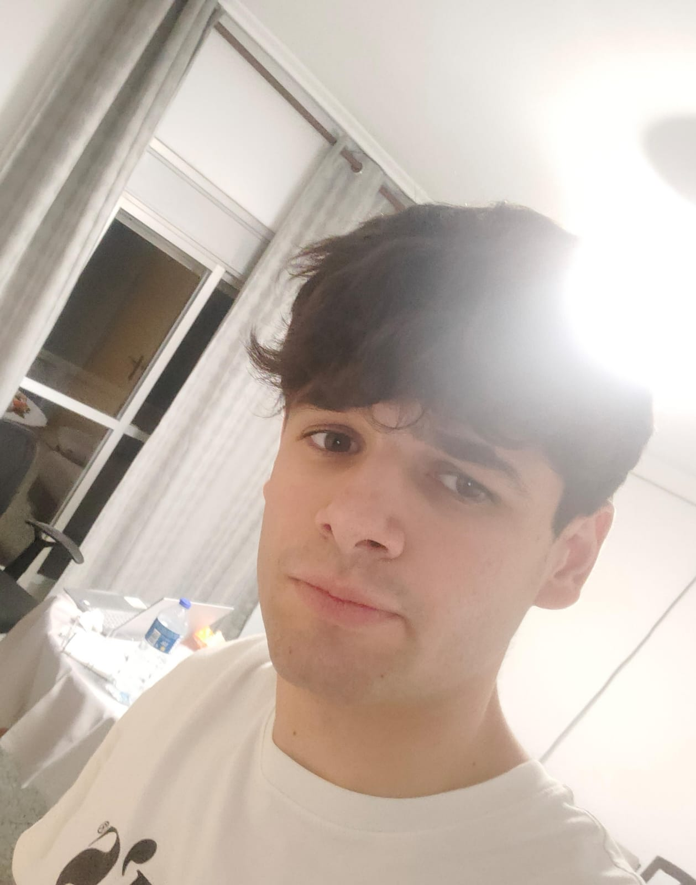

Equipo 3C DISI
Nuestro Equipo
Bienvenidos a la página del equipo 3C

Jorge V.
Ing. Informática — Estudiante
Rol: Emisor

Gabriel
Ing. Informática — Estudiante
Rol: Portavoz

Gonzalo
Ing. Informática — Estudiante
Rol: Revisor

Juan Daniel
Ing. Informática — Estudiante
Rol: Programador

Manuel
Ing. Informática — Estudiante
Rol: Tester
Información del equipo
Lugar de reunión: Escuela Politécnica
Reglas de actuación del equipo
- Participación activa en las reuniones: cada miembro debe venir preparado y contribuir con ideas y trabajo.
- Respeto a los plazos acordados: cumplir los deadlines establecidos y avisar con antelación en caso de impedimentos.
- Comunicación clara y puntual: usar el canal de comunicación del equipo para actualizaciones diarias y coordinación.
Sanción por incumplimiento: El miembro que falte reiteradamente a las reuniones o no cumpla los plazos será suspendido temporalmente de las tareas compartidas del repositorio hasta justificar y subsanar su retraso.
Información de la Asignatura
Diseño e Implementación de Sistemas de Información
- Profesor: Julia González Rodríguez
- Semestre: 5
- Aula: C-1
- Horario: jueves de 11:30 a 13:00
Horario de reuniones
| Día | Hora propuesta | Observaciones |
|---|---|---|
| Lunes | 14:00–15:00 | |
| Martes | No disponible | |
| Miércoles | No disponible | |
| Jueves | 11:30–13:00 | |
| Viernes | No disponible |